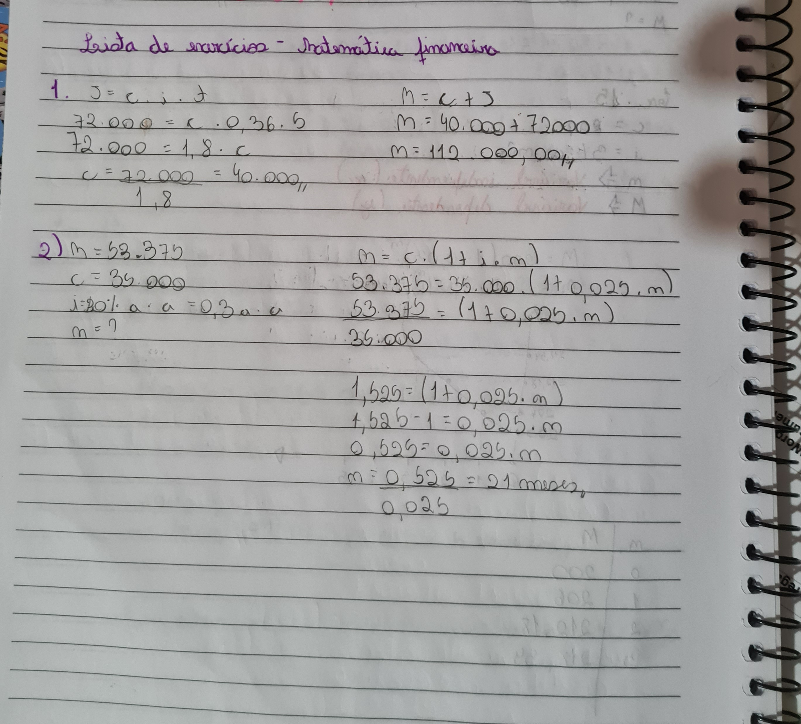

Para esse tegundo trimestre não teve muitos conteudos que considerei fácil, achei BEM mais complicado que o segundo mas separei dois temas que consegui me sair bem, são eles: Juros Simples e Logaritmos.
Esse contúdo de Juros Simples eu achei bem fácil por conta das fórmulas serem bem fáceis de fazer. Sendo as fórmulas: Cáluco dos Juros é 𝑱 = 𝑪 ∙ 𝒊 ∙ n; Cálculo do Montnte é 𝑴 = 𝑪(𝟏 + 𝒊𝒏)
O significado das variaveis é C = Capital Inicial, i = Taxa de Juros e o n = Prazo.
O juro simples é uma taxa previamente definida e que incide somente sobre o valor inicial. Por exemplo: Se você emprestar R$1000,00 com uma taxa de 2% ao mês no juro simples, a taxa será sempre 2% de R$1000 ao longo do prazo.
Essa imagem é um dos exemplos de questões realizadas na sala de aula sobre Juros Simples.
Na matemática, o logaritmo de um número é o expoente a que outro valor fixo, a base, deve ser elevado para
produzir este número. Por exemplo, o logaritmo de 1 000 na base 10 é 3 porque 10 elevado ao cubo é 1 000. De
maneira geral, para quaisquer dois números reais b e x, onde b é positivo e b ≠ 1.
Na parte básica dos logaritmos é muito simples resolver eles, por exemplo, ao escrevermo log2(8) (lê-se logaritmo
de 8 na base 2), estamos procurando o número a que devemos elevar o 2 para que a resposta seja igual a 8. Log2(8)
= 3, pois 2³ = 8.